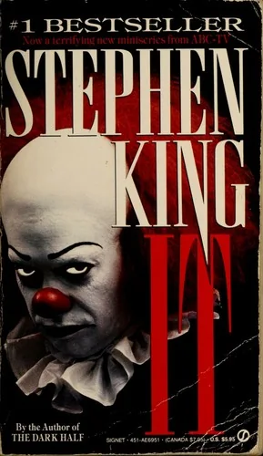
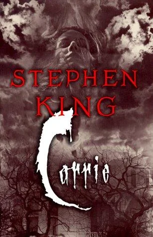
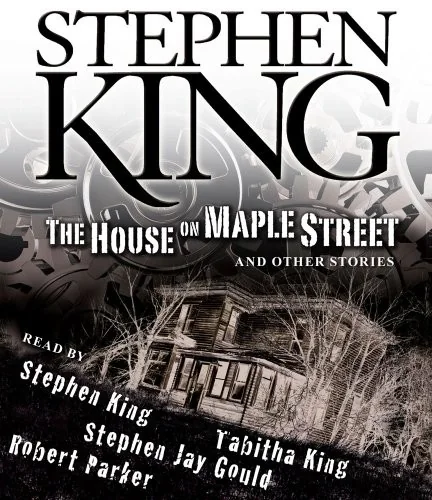
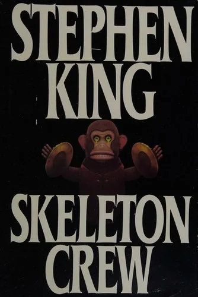
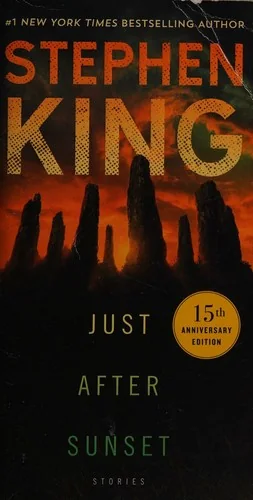
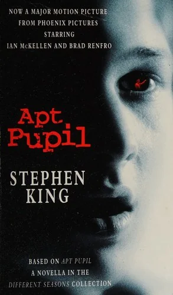
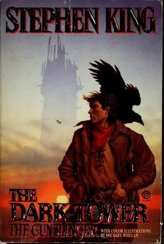
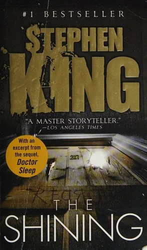

Books & Media · · 11 min read
Every Stephen King Book I've Read, Ranked
Every Stephen King book I've read, ranked: ten books from The Shining to It, by someone who rates King below his own average but keeps going back.
Every Stephen King Book I've Read, Ranked
I've read ten Stephen King books, and they average 3.6 stars from me. My whole shelf averages 4.0, so at least on average King is a below-average author by my standards, which is a ridiculous thing to say about Stephen King. And yet I've kept going back. So here I'm going to dig into why, a little: what about his multiverse pulls me in, and what makes me rank the books low in the end.
Ten books is nothing next to his bibliography, and four I've read are short stories or novellas, so this is not the definitive ranking by any means. The Goodreads average is next to each one for comparison. Lowest first.
- The Shining: me 5, Goodreads 4.28
- Pet Sematary: me 4, Goodreads 4.21
- The Jaunt: me 4, Goodreads 4.16
- The Gunslinger: me 4, Goodreads 3.94
- Apt Pupil: me 4, Goodreads 3.92
- Things They Left Behind: me 4, Goodreads 3.80
- Carrie: me 3, Goodreads 4.00
- Cujo: me 3, Goodreads 3.80
- The House on Maple Street: me 3, Goodreads 3.60
- It: me 2, Goodreads 4.27
Goodreads readers and I agree on the best of King's work (in my opinion): The Shining has the highest average of the ten, 4.28. We disagree most about the book in second place on their list. It averages 4.27, and I gave it two stars. Below the top, my ratings mostly sit within half a star of everyone else's, except Carrie and Cujo, which I liked less than most people seem to.
10. It (1986)

It has a brilliant and terrifying premise: a group of kids in Derry, Maine, unite to confront an ancient, shapeshifting entity that feeds on fear, then return 27 years later as adults to finish the fight. But, sadly, I had to give it two stars. King's writing is atmospheric but lacking something in immersion. I find the mythology of his wider universe really interesting, but I didn't like this one the way I expected to. The last quarter is so abstract, exploring concepts rather than actual events, even in the fight scenes, that I lost interest pretty quickly. And, of course, the scene with the children in the sewers near the end was gross. I get that it fits the theme, but it didn't sit well with me, and regardless of what it conveys conceptually or King's intent in writing it (or how much his face resembled someone who fell into fresh snow at the time of writing), I tend to find an "orgy of children" to be at best uncomfortable, unnecessary and concerning.
I wish there was more exploration of It as a creature, the deep dark mythology of the Lovecraftian monster with its odd diet and fingers in various stories - especially considering the epic length of the book. Speaking of the length, there were various subplots and meandering chapters that felt unfinished and/or unnecessary. All in all, a disappointing read.
9. Cujo (1981)
A mother and her son trapped in a sweltering car by a rabid Saint Bernard is a great setup, and the survival story at the middle of it is interesting, psychological and tragic. The writing around it is sluggish. It's a disjointed stream-of-consciousness style with no chapters, which keeps breaking the flow (chapterless books are fine but you need to make it work!). The tension also keeps getting derailed by bloated subplots about a failing cereal marketing campaign (???) and an affair, so it's hard to stay lost in the horror. A decent, middle-of-the-road horror novel that must have skipped the editor on the way to publication.
8. Carrie (1974)

Carrie was King's first novel and it carries a lot of cultural weight (though I think the movie did a lot of that with the visuals), but it reads like a first book: raw, messy and sometimes brilliant. The core of the story is a page-turner for sure. King nails the cruelty of high school and what it's like to live with an abusive, fanatical parent, and you feel for Carrie White so much that the prom, when it comes, is tragic and also super cathartic.
The execution is clunky. The story keeps cutting away to fake news clippings, book excerpts and reports, which kills the suspense right when it builds, at least it did for me. Margaret White and Chris Hargensen are cartoonishly evil, there to push Carrie over the edge and not much else. It's absolutely worth reading to see where the master of horror started.
Mike Flanagan's Carrie series comes to Prime Video on 7 October 2026, all eight episodes at once, with the story moved into the social-media age. As a huge fan of the Flaniverse, I know I'll be watching this.
7. The House on Maple Street (1993)

The hook is fun: the Bradbury kids work out that their house is swapping its wood and plaster for alien metal and a countdown clock, and they use it to get rid of their awful stepfather by trapping him inside just before liftoff. It's a creative nod to classic sci-fi, it moves fast, and the worry for their mum gives it some weight. But it didn't pull me in. The jump from a family drama to a literal spaceship taking off is too abrupt, and nobody ever explains how the house works, so it reads like a B-movie or a pulp comic, not a world I could sink into.
6. The Jaunt (1981)

A short story about teleportation, and it tickles a certain trope I adore: the Jaunt isn't instant travel from A to B, it's something darker. In King's future everyone jaunts, but you have to be put under first, because anyone who goes through awake spends an eternity alone in white nothing while their body arrives in an instant. The dread lands on you the same way it lands on the characters.
The father spends a big chunk of the story telling his kids the history of the technology, and the lore is interesting, and if the story were longer it would have a purpose, but as it is the tension of the family's trip just stops for a history lesson. Once the jump happens it drags you straight back in, and the ending leaves with an unsettling idea to consider.
5. Things They Left Behind (2005)

A short story about survivor's guilt after 9/11. Scott Staley called in sick to his job at the World Trade Center that morning, and a year later things that belonged to his dead coworkers start turning up in his apartment, a pair of sunglasses, a baseball bat. King keeps the supernatural part completely ordinary and it works: the guilt is heavy and Scott can't get out from under it. It loses a star because once he works out he has to take the things back to the families, it turns into the same visit over and over. Tying up a real tragedy with a neat supernatural bow also gets a bit too sentimental for me, and it undoes some of the realism of the first half. Still a great read.
4. Apt Pupil (1982)

This one is disturbing, and it's about people, not the supernatural. Todd Bowden is an American golden boy who finds out his elderly neighbor is Kurt Dussander, a Nazi war criminal in hiding. Instead of turning him in, Todd blackmails him into telling every gruesome detail of what he did. It's a weird parasitic relationship, with the boy manipulating this old man, who appears to just want to live out his days in peace, leaving his awful past behind. At first, at least. The premise is great and you keep hoping the 'apt pupil' will wake up and be redeemed.
Then the years pass, both of them start killing local transients on their own, and the tension of those talks in Dussander's kitchen turns into so much violence that it numbs more than it scares. The pacing and execution of the second half is a bit off. The ending is bleak and explosive, and there isn't one sympathetic character in the whole thing.
3. The Gunslinger (1982)

I was surprised to learn as a teenager that Stephen King had written an epic fantasy series, as I had only known him for horror. The Gunslinger is the first Dark Tower book: Roland Deschain chasing the Man in Black across a dying desert, and the heat and the emptiness pull you right in. The world is completely bizarre, high fantasy and post-apocalyptic sci-fi and a brutal spaghetti western, of all things, and King doesn't explain any of it, he just drops you in. It was first published as separate short stories and you can tell. Roland's past in Gilead is fascinating, but the flashbacks keep stopping the chase. The final act is a huge, mind-bending philosophical conversation that leaves you with far more questions than answers - this isn't bad but it does make the pacing a bit disjointed.
2. Pet Sematary (1983)
I first read Pet Sematary as a kid, and it left a creepy impression on me. It's about how far a parent would go to undo a loss, and King puts you inside Louis Creed's head as he talks himself into each terrible decision on the way to the old burial ground. The walk through the woods past the deadfall is the scariest part of the book, and it makes the supernatural feel real. The slow part is the build-up, with lots of the Creeds' everyday family life and lots of foreshadowing. It makes the loss hurt more when it comes, but the story stalls before the third act.
The film adaptations don't live up to the writing either. They go for shock and gore and miss the tension. The real horror isn't the cat or the toddler, it's grief, and how much pain it takes before you'd do anything to make it stop.
1. The Shining (1977)

Five stars, the only one. Jack Torrance takes a winter job as caretaker of the Overlook Hotel, up in the Colorado Rockies, and moves his wife and son in with him. The snow cuts them off, and you watch Jack come apart slowly while the boiler runs too hot and the hotel works on him. The haunting is scary because it's tied to real things, his drinking and the way he's hurt his family before. Unlike in It, King actually gives a good amount of space for the supernatural world to be explored and probed, which gives breadth and depth to his multiverse and the magic within it.
Kubrick's film is a perfect piece of cinema in its own right, but it's a different story. His Jack looks halfway to madness from the very first frame. King's Jack is a loving but badly flawed father who gets eaten away by the hotel, and that makes the book a tragedy, with a warmth and heartbreak the film leaves out on purpose. In my opinion it's the best example of "the building is the monster" I've ever read.
There are many books of King's I haven't read, so I can't comment on everything. I should mention I DNF'd The Stand - I had high hopes as I love post-apocalyptic and fantasy books alike, but it felt like a drag and not worth pushing to the end.
I don't describe myself as a King fan, because I find his writing a real mixed bag, and his movies are also mixed with a tendency to be worse. But he is a cultural icon, with the respect of many, and he deserves it for sure. I feel there is an element of Americana in his literature I don't connect with, and I think there's also a generational gap - he writes for a world where kids grew up in the pre-90s, and expects readers to fill in the gaps of the world he draws only an outline for.
Finally, I find his work lacking in depth. There is such potential in the multiverse, but it's so barely explored and only hinted at, though I know I am missing context in much of the Dark Tower series and potentially other books, too.
Common questions
Which Stephen King book should I start with?
The Shining.
Why is It last?
Because the last quarter lost me, and one scene near the end crossed a line for me that the theme didn't justify.
Hero image: Stephen King's house on Broadway in Bangor, Maine, with its bat-and-spiderweb iron gate. Photograph by Warren LeMay, darkened for this page, via Wikimedia Commons (CC BY-SA 2.0).